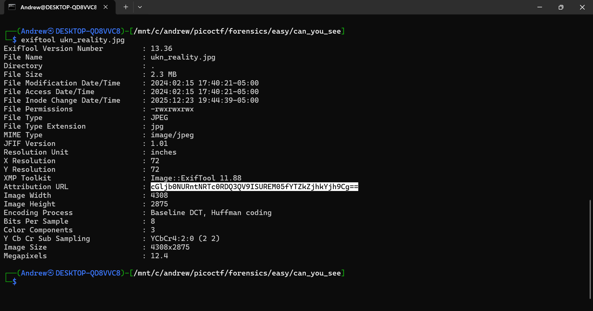

Can You See
ExifTool Metadata Base64
A classic “look past the image” metadata challenge.
Challenge Description
Screenshot from the picoCTF challenge page:

The prompt hints at a game of hide-and-seek. In other words, the flag isn’t visible in the image itself — it’s hidden somewhere else.
Challenge Overview
After unzipping the provided file, you’re given a single JPEG image. The image looks completely normal, so the next logical step is to inspect its metadata. Sure enough, a suspicious Base64 string is hiding in one of the metadata fields.
Solution
-
Unzip the provided file.
Extracting the archive gives a single image:
ukn_reality.jpg. -
Inspect the metadata with ExifTool.
Since the image itself didn’t show anything interesting, I ran
exiftoolto check for hidden metadata:exiftool ukn_reality.jpgIn the Attribution URL field, there was a long, suspicious Base64-looking string.
-
Decode the Base64 string.
Copying that value into CyberChef and decoding it from Base64 immediately revealed the flag.
picoCTF{ME74D47A_HIDD3N_a6df8db8}When an image looks boring, always check the metadata. ExifTool catches a surprising number of easy forensics flags.
Tools Used
- ExifTool — inspect image metadata
- CyberChef — decode Base64
- Unzip — extract the provided archive